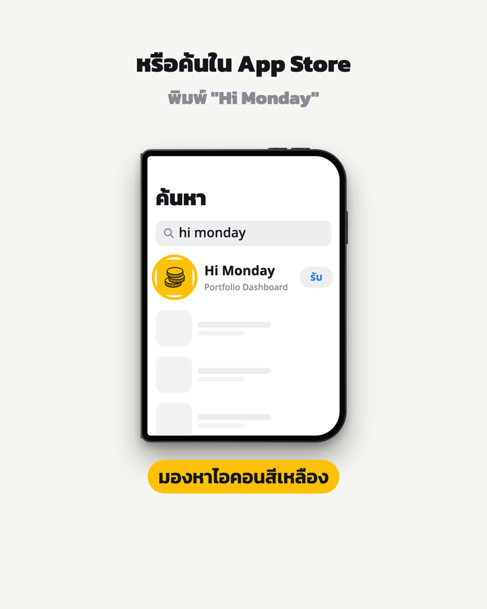

แตะ
⋯
ตรงนี้ แล้วเลือก “เปิดในเบราว์เซอร์”
เพื่อดาวน์โหลดแอป

Hi Monday
หุ้น · คริปโต · เงินสด
รวมทุกตัวเลขที่ต้องรู้ไว้ในหน้าเดียว
ฟรี · ไม่มีโฆษณา
App Store
iPhone · iPad
Google Play
Android
คัดลอกลิงก์
v13